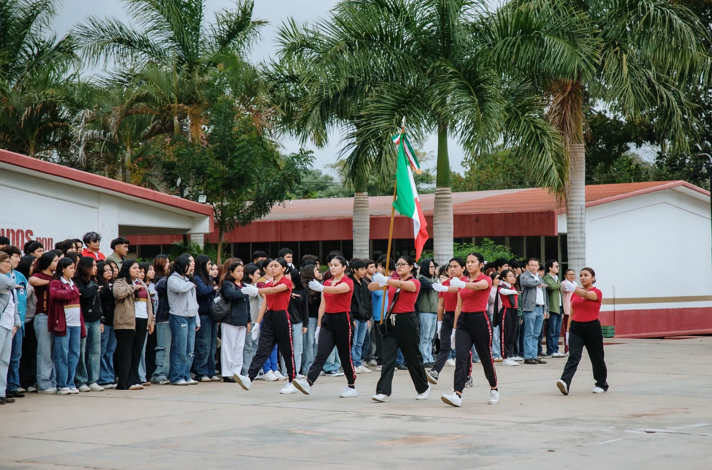
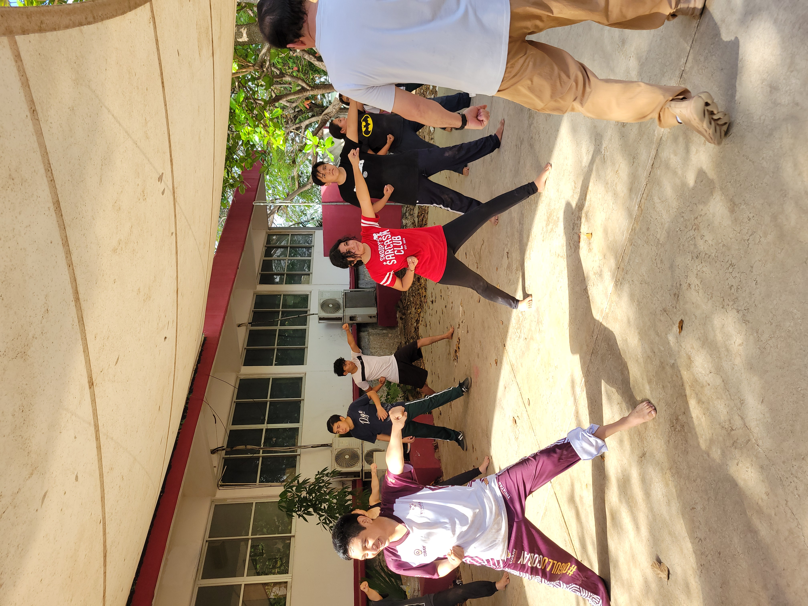
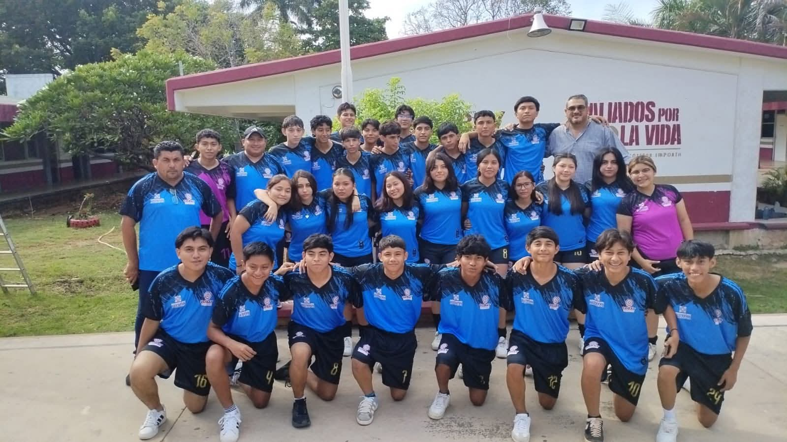
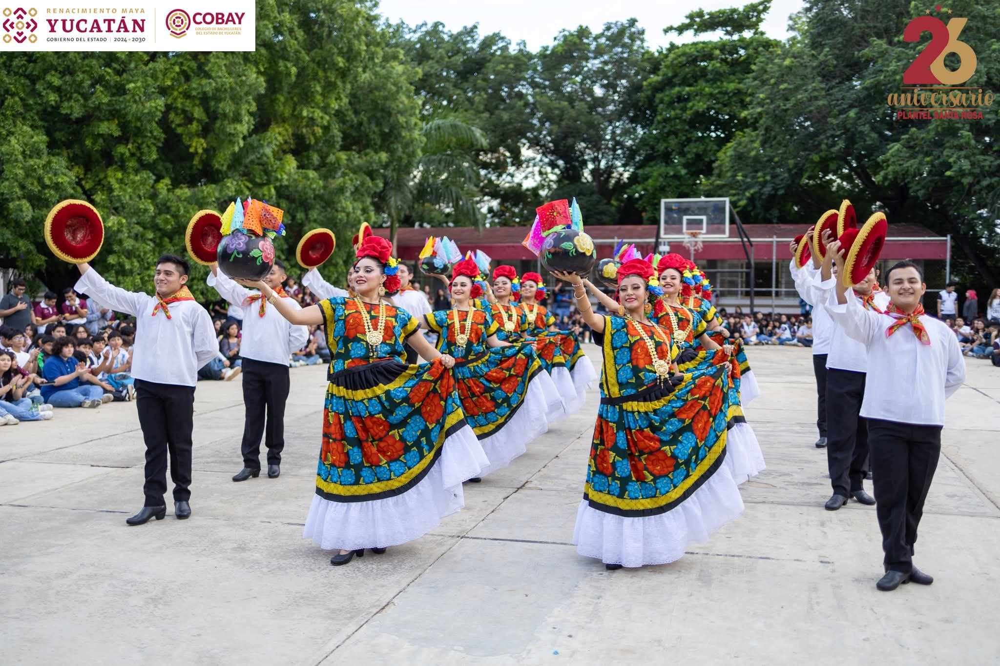
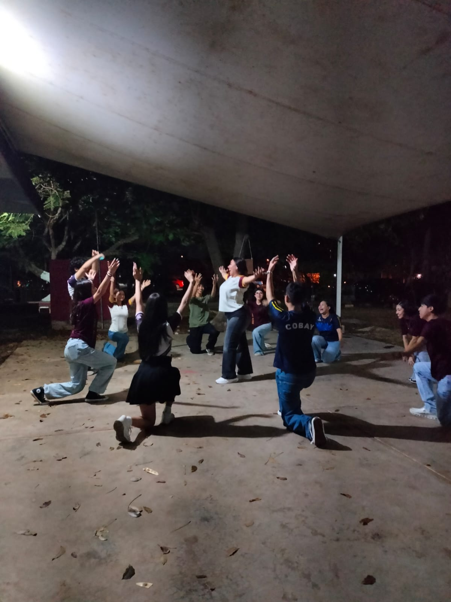
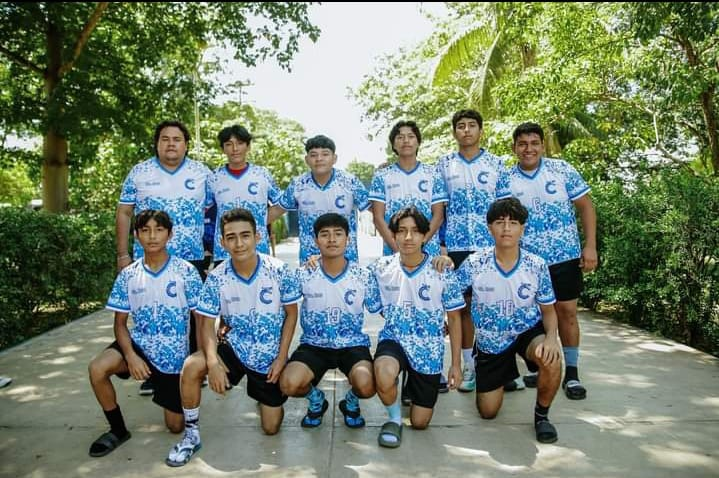
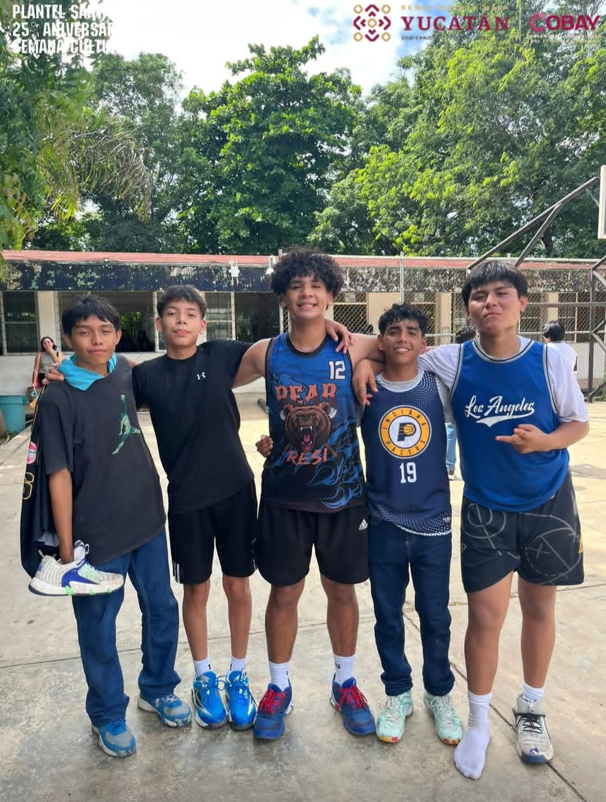
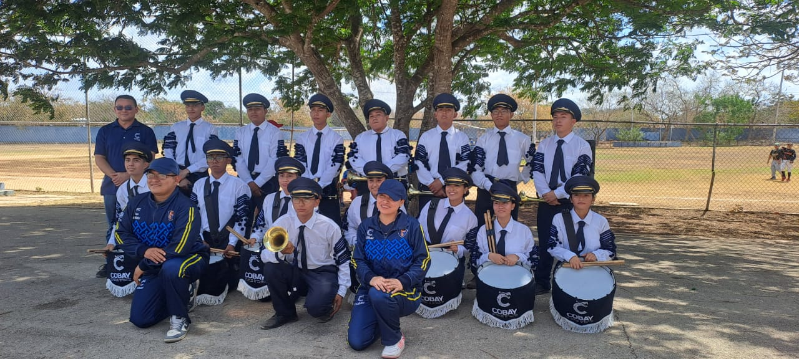

ESCOLTA
Fomenta el respeto a los símbolos patrios, la elegancia en la marcha y el trabajo coordinado bajo estrictos estándares de disciplina.

TAEKWONDO
Disciplina coreana que combina técnicas de defensa personal con el desarrollo de la concentración, el respeto y la condición física de alto impacto.

FUTBOL
Fomento del liderazgo y la estrategia deportiva en el deporte más popular, participando en torneos internos e interbachilleres.

FOLKLORE
Preservación de nuestras raíces y tradiciones, especialmente la jarana yucateca y bailes regionales de México. Es una de las actividades con mayor presencia en eventos estatales.

DANZA MODERNA
Espacio para la expresión corporal a través de ritmos actuales, desarrollando coordinación, ritmo y confianza en el escenario.

VOLEIBOL
Enfocado en la comunicación asertiva y los reflejos, ideal para fortalecer la integración grupal.

BASQUETBOL
Desarrollo de agilidad, resistencia y precisión técnica en la cancha, promoviendo la sana competencia.

BANDA DE GUERRA
Una actividad de gran tradición donde se desarrollan habilidades rítmicas con tambores y cornetas, fortaleciendo el carácter y el sentido de identidad institucional.
